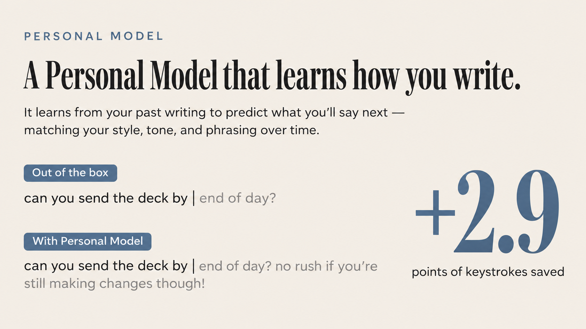
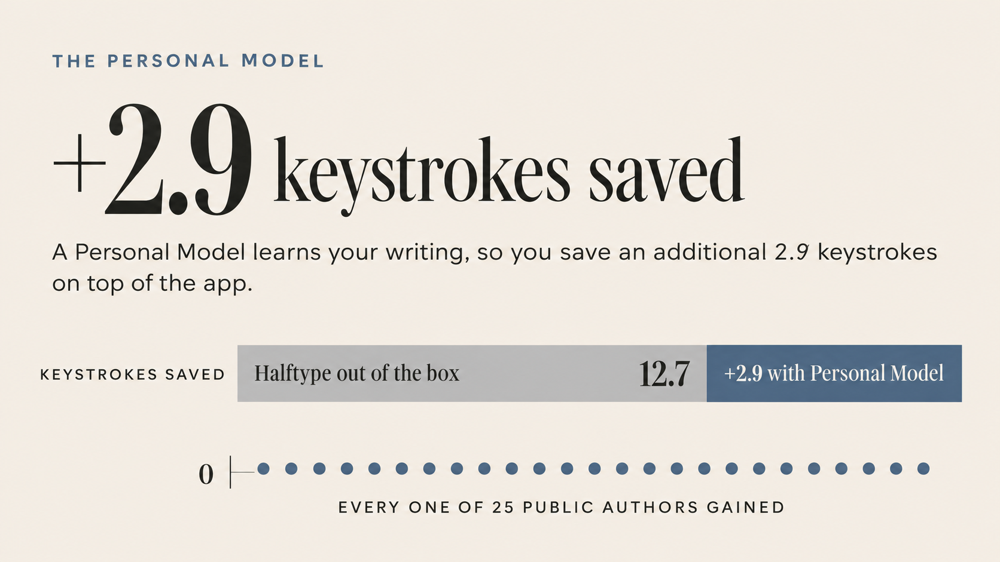

The question: what replaces the 28.6% strip under the comparison. John: “we can reorganize or rewrite as like a +x percent if training a personal model w/ pro right? So it's saying +x percent from baseline? We might need a clear visual explanation for this though.”
Two facts that shape every option. (1) It's +2.9 points, not +2.9%: keys saved went from 39.3% to 42.1% on 25 public authors, which is about 7% more than before. Points are what the rest of the page uses, so the options say points, or “about 3 more keys in every 100”. (2) The 39.3% base is a different test from the 25.1% against KeyType (a replay on Stack Exchange comments, not sentences typed into the app), so the gain can't be added to 25.1%. An option that shows the base has to say so.
Recommendation: E, “3 more keys in every 100”. It shows the gain itself, which is what John asked for, and it reads in a second without knowing what a percentage point is. Bars (C) make +2.9 on 39 look like almost nothing. B is the cheapest if you'd rather not add a visual. All options drop the 28.6% strip; its 72 ms moves to the comparison's fine print.
A replay, not the test against KeyType above… (fine print as drafted)
A replay, not the test against KeyType above… 39.3% to 42.1% on 25 Stack Exchange authors' comments…
+2.9 points, and all 25 gained. A replay on their Stack Exchange comments, so not comparable with 25.1% above.
+5.5 points. One person's private messages, so nobody else can check it.
Each of the 25 public authors' gain fell in this range. None lost.
A replay, not the test against KeyType above (that one has Personal Model off): 25 public Stack Exchange authors, one personal model each, 39.3% to 42.1% of keys saved, +2.9 points (95% CI +2.5 to +3.3), and all 25 gained. On the author's own messages, +5.5…
An illustration, not a real suggestion.

